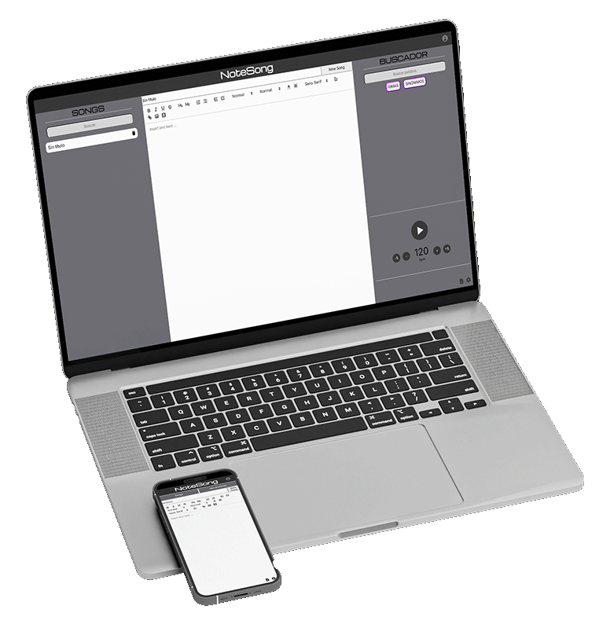
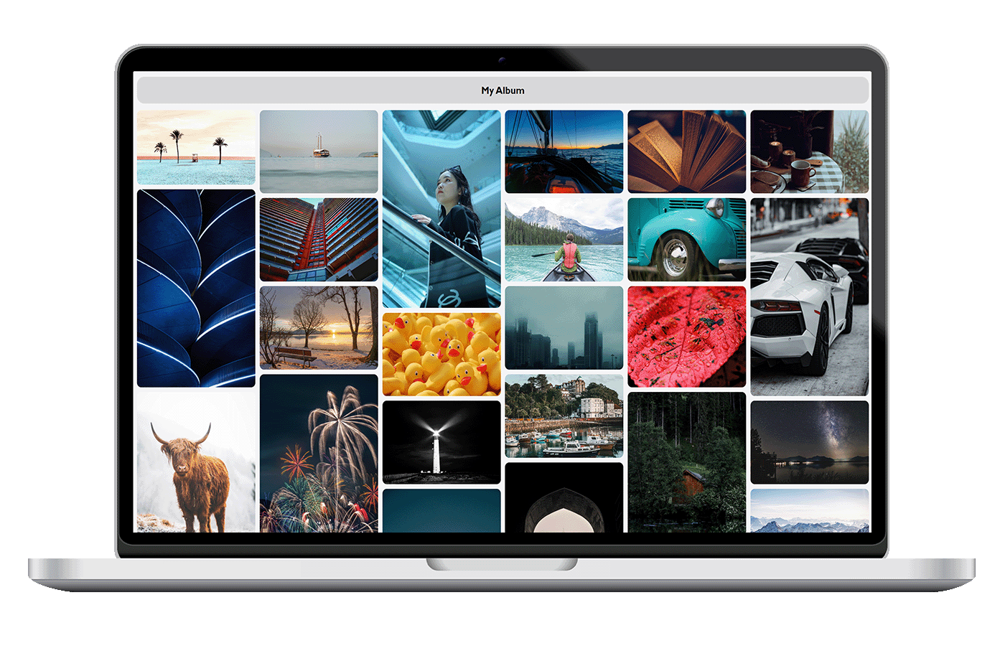

NoteSong es una aplicación web que permite a compositores escribir y organizar sus letras de canciones ofreciendo herramientas específicas, ya sea localmente o en la nube. Ofrece sincronización en tiempo real, autenticación segura con JWT, y soporte offline utilizando localStorage.
Angular
Node.js
MongoDB

Galería local de imágenes estilo masonry implementada con JavaScript vanilla y CSS Grid. Utiliza lazy loading para optimizar el rendimiento y un sistema de redimensionamiento dinámico para mantener el layout masonry. Incluye una funcionalidad de popup para ver las imágenes en tamaño completo.
HTML5
CSS3
JavaScript